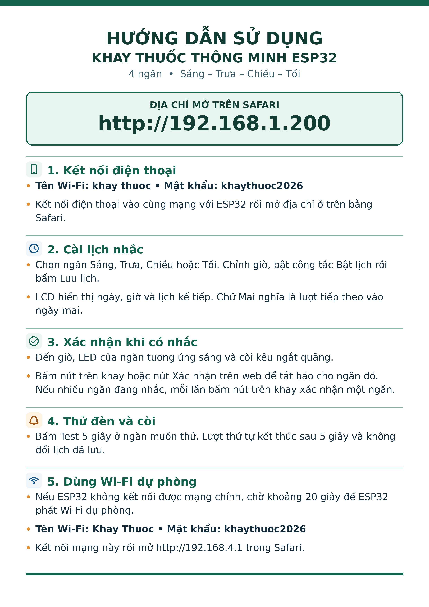
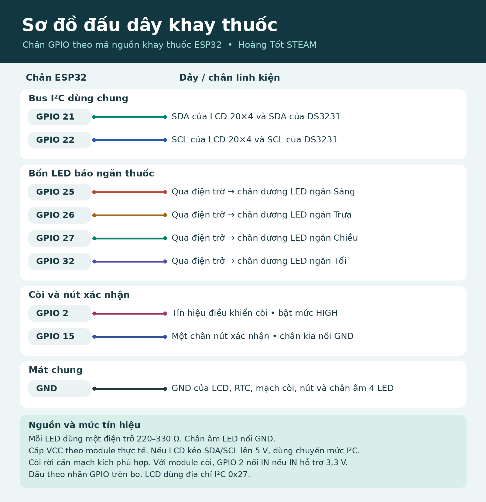

Khay thuốc thông minh
Bo mạch ESP32
Khay thuốc cho phép cài giờ nhắc uống thuốc theo lịch.
Hướng dẫn sử dụng

Sơ đồ đấu dây và chân kết nối ESP32

Bấm vào sơ đồ để xem rõ số chân GPIO.
Nạp firmware qua USB
- Mở trang bằng Chrome hoặc Edge trên máy tính.
- Cắm ESP32 bằng cáp USB có truyền dữ liệu.
- Bấm nút nạp, chọn cổng COM của ESP32 rồi chọn Install.
Lưu lại lịch nhắc trước khi nạp vì firmware gộp có thể xóa cài đặt trên bo.